In this work we develop a closed-loop framework based on autotelic reinforcement learning for discovery and control in complex systems: an agent samples goals (i.e. desired states or dynamics of the system) and learns to steer a system toward them through small, local interventions on its state. We instantiate the framework on Lenia, a continuous cellular automaton, in a system we call CARL. The clips above show one episode from each of our three experiments. Trained CARL agents can (1) create solitons, the self-organizing patterns Lenia is known for; (2) control them, by steering their direction of movement; and (3) take direction from a human in the loop, acting as a high-level interface between a person and a complex system — here, a steering agent is deployed in a maze while a person chooses the target direction.
Existing methods for exploring cellular automata and other complex systems mostly operate in open loop: they set initial conditions, execute a full simulation, and observe the outcome, without intervening during execution. We introduce a closed-loop framework based on autotelic reinforcement learning, in which an agent autonomously samples diverse goals and learns a goal-conditioned policy to intervene in a complex system through minimal, local perturbations. We instantiate this framework on Lenia, a continuous cellular automaton known for life-like self-organizing patterns, in an agentic system we call CARL, and demonstrate three capabilities. First, CARL discovers stable solitons across a wide range of Lenia update rules at a higher rate than heuristic baselines. Second, it learns to steer the movement direction of existing solitons with few interventions, showing that CARL can control self-organizing patterns, not only create them. Third, humans can use trained agents to guide solitons through maze environments in real time by specifying high-level directional commands that the agent translates into low-level interventions. Trained across diverse goals, update rules, and random initial states, the agents acquire policies that generalize zero-shot to various out-of-distribution conditions. These results suggest a path toward artificial experimentalist agents that, autonomously or with human guidance, discover and control emergent phenomena in complex systems.
One of the central endeavors of science is understanding complex systems at all scales of organization, from elementary physics to astronomy, from molecular biology to ecology. Two general goals drive this research: (1) explaining and discovering the diverse phenomena that emerge in complex systems, and (2) learning to control complex systems toward desired states, ideally with minimal effort.
In biomedicine, for instance, the goal is not continuous intervention, but the restoration of healthy, self-sustaining dynamics. Rather than controlling individual components, we aim to guide systems back into stable regimes in which they can maintain their function autonomously. However, identifying such interventions is inherently challenging, as system behavior arises from interactions across many scales. This raises a fundamental question: how can we systematically control systems whose internal dynamics are complex or only partially understood (Levin, 2023, 2025)?
Computational approaches are essential for pursuing these goals, as they enable us to simulate complex systems in silico. Cellular automata (CAs) have long served as standard models for studying self-organization, and recent continuous extensions such as Lenia (Chan, 2020) produce increasingly complex and life-like patterns, making them ideal testbeds for discovering and controlling emergent phenomena. Because the space of behaviors a CA can produce is vast and difficult to anticipate, researchers have developed a range of methods to explore it (see Related Work in the paper). Most of these, however, operate in open loop: parameters and initial conditions are chosen upfront, with no interaction during rollout.
This stands in contrast to how humans typically engage with complex systems: continually observing and interacting with the system in real time to form an intuition of its causal dynamics (e.g., a gardener continuously pruning, watering, and reshaping a garden as it grows). As systems grow in complexity, however, effective intervention becomes increasingly difficult. Nonlinear interactions, feedback loops, and delayed effects make human intuition prone to systematic biases, and modern challenges — particularly in biomedical, ecological, or economic contexts — quickly reach the limit of human modeling capabilities (Tversky and Kahneman, 1974).
To address these gaps, we propose an autotelic reinforcement learning (RL) framework as an interaction-driven approach to translate a diversity of desired experimental outcomes into actionable, causally effective interventions in complex systems. By autotelic, we mean an RL agent that autonomously self-generates and learns to achieve diverse goals — the operational counterpart of these outcomes — in the considered complex system (Colas et al., 2022). As a concrete instantiation, we introduce CARL (for controlling Cellular Automata with Reinforcement Learning), which learns to intervene on CAs in a closed-loop fashion, continuously observing and shaping their dynamics over time (Fig. 1).
Through a series of experiments using Lenia as a testbed, we demonstrate that CARL can both discover interesting local self-organizing phenomena, called solitons, and control their behavior, with limited interventions and in a sample-efficient manner. Moreover, CARL generalizes well to out-of-distribution scenarios, such as unseen world dynamics and action spaces. Lastly, we show that trained CARL agents can be deployed interactively, enabling humans to specify and adjust high-level goals in real time while the agents translate them into low-level interventions for controlling complex systems.
While the framework is demonstrated on Lenia, it is designed to be system-agnostic. Looking ahead, we hope to extend it to increasingly biologically grounded models.
Lenia's dynamics are sensitive. An orbium, the best-known Lenia soliton, glides across the grid indefinitely when left alone, and a patch of randomly raised and lowered activations dissipates within a few steps on an empty grid. What happens when we combine them?
The outcome is not the same each time. Under different random draws, the same kind of patch can turn the orbium, dissolve it, blow it up into a Turing pattern, or cause it to morph into an entirely new stable soliton. A few perturbations at the right place and moment decide which attractor the system falls into. Can that leverage be put to use — can we train a controller that knows where and when to perturb, in order to steer the system towards desired regimes? More specifically, can we train a controller that can discover new self-organizing patterns, and learn to control their behavior?
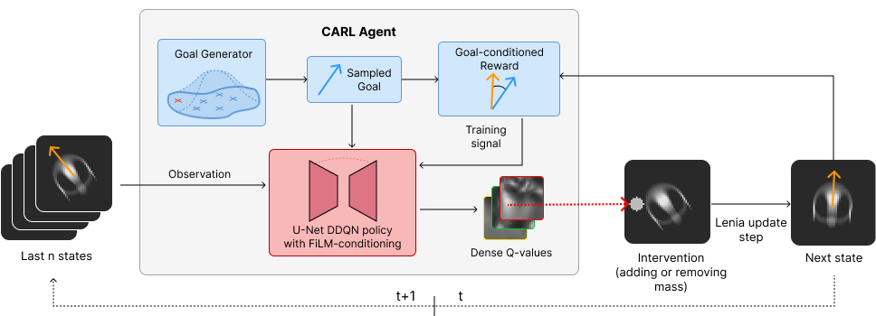
We cast the discovery and control of solitons in Lenia as a sequential decision problem, and tackle it with reinforcement learning.
An episode alternates between the agent and the system. At each step the agent observes the grid and applies one intervention, the Lenia update rule then advances the state, and the agent receives a reward that scores the new state against the goal and charges for the intervention. Interventions are local and simple: an action adds or removes mass in a small disk around a single cell. The agent may also choose not to intervene.
At the start of each episode CARL samples a goal, which specifies the target the agent must reach, the action cost, and the update rule the episode runs under. Lenia's update rule is parameterized, and we train across a set of update rules. Every intervention carries the sampled action cost. Driving the system towards a desired state can be done with continuous interventions, i.e. micromanaging, or with sparse interventions which enable the complex system to do the rest of the work. Action costs tip the balance toward the latter, pushing the agent to act sparsely and to work alongside the system's dynamics rather than against them.
The policy network is a U-Net (Ronneberger et al., 2015) that maps the grid to a dense field of Q-values, one per action type, so choosing an action is choosing a cell. Dense action representations of this kind have previously been used for robotic pushing, grasping and mobile manipulation (Zeng et al., 2018; Wu et al., 2020). Like CAs, the network is convolutional and local; its receptive field is nonetheless wide enough to cover most of the grid. It observes the last four states, so that motion is visible. Goal, action cost, step index and the parameters of the running update rule enter through FiLM conditioning (Perez et al., 2018), so a single policy of roughly 800K parameters covers the whole goal space and every update rule it was trained on. We train with Double DQN (van Hasselt et al., 2016).
We demonstrate CARL through three experiments.
Soliton Creation Task · Fig. 2–5
The phenomena of primary interest in Lenia are solitons: spatially localized, self-organizing patterns that persist over time and often move across the grid. Solitons are not easy to discover; most initial states and update rules result either in dead worlds or global, Turing-like patterns that fill the whole grid. A range of search methods have been developed for the purpose of discovering solitons. These span from systematic exploration of the update-rule parameter space, paired with hand-designed initializations of the grid (Chan, 2020; Hudcová et al., 2025) , to population-based diversity search methods that accumulate an archive of distinct behaviors, such as intrinsically motivated goal exploration processes (Etcheverry et al., 2020) and quality-diversity (Faldor and Cully, 2024).
To detect whether a soliton is present on the grid, we use a simple filter inspired by prior work (Hamon et al., 2025; Faldor and Cully, 2024): after applying the Lenia update rule for 5,000 steps without intervention, we classify the resulting state as containing a soliton if its total mass is non-zero and below 10% of the grid capacity. We omit additional checks used in prior work — such as a velocity threshold, mass variability, and robustness testing — since our goal is to evaluate CARL for its ability to create local, persistent patterns of any kind. We visually inspected many simulations that pass the filter and found no false positives (i.e., global, Turing-like patterns were never accepted).
Rather than explicitly training to build solitons — which would require defining what constitutes a soliton within the reward signal — we train CARL on a simpler, proxy task: maintaining a target mass on the Lenia grid, for a given update rule and action cost. When actions are costly, the agent faces a choice between constantly intervening to hold the mass at the target, and finding a self-sustaining configuration that matches it. Here the second option is simply cheaper: a configuration that holds the target mass without help costs nothing to maintain. Soliton creation therefore emerges as a byproduct of reward maximization.
Goal space and reward. The goal space is 𝒢 = 𝒯 × 𝒞 × Ω, where 𝒯 is the set of target masses, 𝒞 the set of action costs, and Ω the set of update rules. At the start of each episode, CARL uniformly samples a goal g = (τ, c, ω), with τ ∈ [0, 200], c ∈ [0, 0.2], and ω drawn from a set of training update rules. The reward at each step is
where Mt = ∑i,j Xti,j is the total mass of the grid at time t, N the total number of grid cells, and δt ∈ {−1, 0, +1} the action type selected by the agent. The first term penalizes deviation from the target mass, the second penalizes non-trivial interventions, weighted by the sampled action cost c. A single policy must therefore learn to act across diverse combinations of target masses, action costs, update rules, and initial conditions. Sampling the action cost per episode rather than fixing it serves two purposes: it produces a single budget-adaptive policy that can operate across a spectrum of intervention regimes at deployment, and we speculate it also acts as an exploration mechanism during training — low-cost episodes allow the agent to freely discover viable configurations, while high-cost episodes pressure it to find self-sustaining ones.
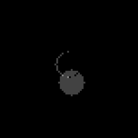
t = 0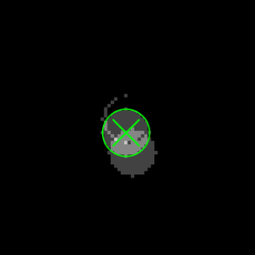
t = 1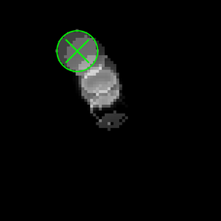
t = 7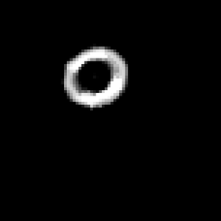
t = 21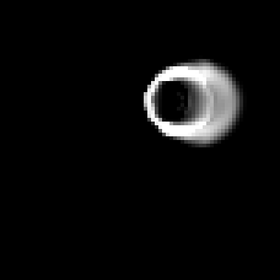
t = 101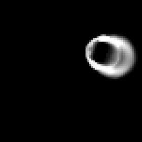
t = 521Mass tracking evaluation. We evaluate the trained agent on the Cartesian product of target masses τ ∈ {0, 25, …, 400}, action costs c ∈ {0, 0.05, …, 0.4}, and all 85 training update rules, running 16 episodes per combination. Both τ and c extend to twice their training range.
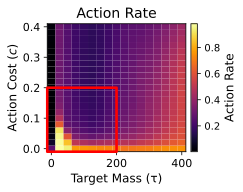
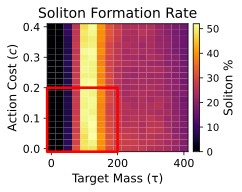
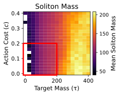
Comparison with baselines. We compare CARL against several heuristic baselines across all training update rules, with a fixed action cost of c = 0.1 and mass targets τ ∈ {50, 100, 150, 200}:
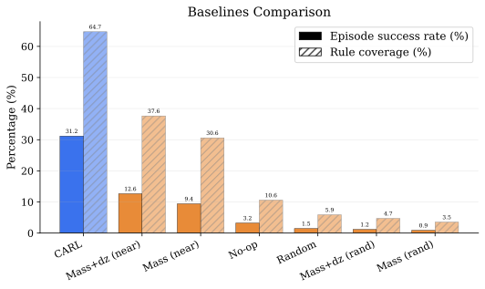
Generalization. The results above show that CARL reliably creates solitons under training conditions. We now assess how robust this capability is along three axes: modified action parameters, rescaled update rule kernels, and entirely novel update rules.
For modified action parameters, we change the action hyperparameters Ra and Ma at test time, with τ = 125 and c = 0.1 fixed. The agent does not observe these hyperparameters. For a rescaled kernel radius, we deploy the agent across ρ ∈ {4, 6, 8, …, 26}, proportionally adjusting the action radius and grid size (linearly) and the target masses (quadratically), so that the ratio between action scale, target mass and pattern size stays roughly constant. This is a demanding form of generalization: rescaling the kernel does not simply scale the emerging patterns, but can fundamentally alter their behavior due to discretization effects. Since the policy network is fully convolutional, it can be deployed on different grid sizes without modification.
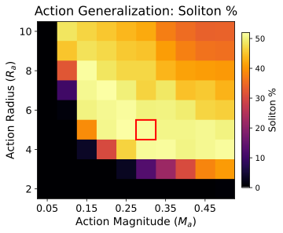
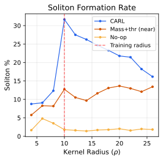
Novel update rules. Finally, we deploy CARL on unseen convolutional kernels. We select seven kernels K not included in the training set and sweep across growth function parameters μ ∈ {0.2, 0.205, …, 0.4} and σ ∈ {0.02, 0.022, …, 0.06}, with τ ∈ {50, 100, 150, 200, 250} and c = 0.1, at kernel radii ρ ∈ {10, 14, 18}.
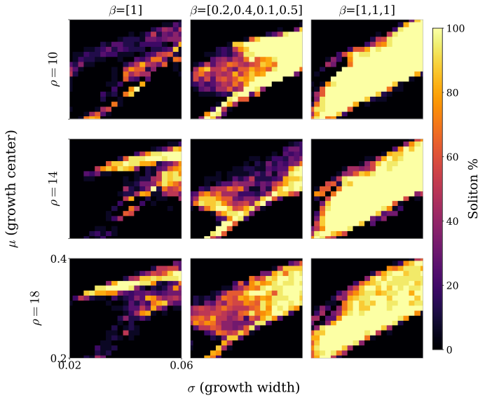
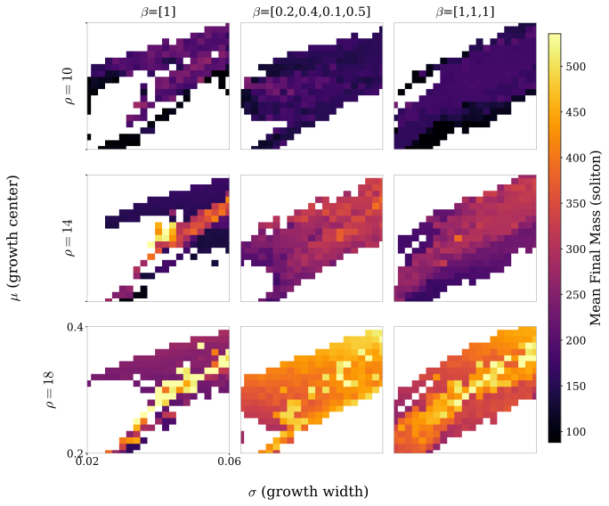
Soliton Direction Task · Fig. 6
To demonstrate that CARL can control self-organizing phenomena, not only create them, we train a new agent on a task where it must steer a soliton toward a target direction. Each episode begins with a uniformly sampled target direction, an action cost as before, and a soliton drawn from a set of 48 that the first agent discovered — placed on the grid under its own update rule and randomly rotated.
A soliton's movement direction is measured by its center-of-mass displacement over the last four timesteps. The reward combines the cosine similarity between the current and target direction with a mass penalty, as in the previous task, here holding the mass of the initial state.
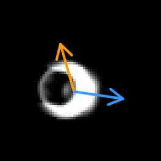
t = 2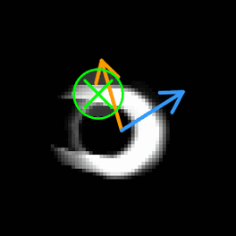
t = 52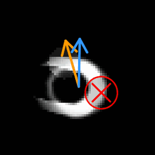
t = 53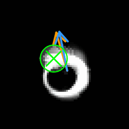
t = 62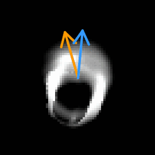
t = 82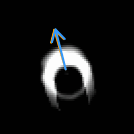
t = 127This is the same effect action costs produced in the creation task, in a different guise. Rather than continuously correcting the soliton's trajectory, the agent learns to apply a brief perturbation that redirects it and then withdraws, letting the soliton carry on along the new heading unassisted.
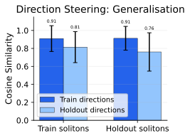
Human-in-the-Loop · Fig. 7
We demonstrate how trained CARL agents can serve as real-time interfaces for human control. We extend the direction environment with procedurally generated mazes, where walls are regions in which grid values are fixed to zero. A soliton is placed in the maze, and the user can modify the agent's goal (the target direction) and the action cost in real time, steering the soliton through the maze.
The agent has no explicit representation of the maze — it perceives only the single-channel Lenia grid, identical to its training setting. Furthermore, the agent was never trained with changing goals, yet it successfully redirects solitons multiple times within a single episode while preserving their coherent shape. Reducing the action cost makes the agent intervene more frequently and advance faster.
Although the agent performs well, several failure modes emerge. Wall collisions can cause the soliton to disintegrate or explode, though some solitons are robust to contact. High action costs can also lead to failure, as interventions become too sparse to maintain the soliton's shape after perturbations, and the agent generally cannot recover a disrupted pattern.
Drive a soliton through the maze yourself →Rather than setting initial conditions and passively observing outcomes, a goal-conditioned policy here observes the evolving system and applies minimal, local perturbations toward diverse self-generated goals. Instantiated on Lenia, this discovers solitons across a wide range of update rules and procedurally generated initial states, generalizes to out-of-distribution conditions, maps novel update rule spaces to find the regions that support solitons, and — with a second policy — controls the solitons it finds.
The design choice that carries most of this is the action cost. It reflects the principle that effective control of a self-organizing system should work alongside the system's intrinsic dynamics rather than against them. In the mass-tracking task it turns soliton discovery into a side effect of reward maximization: the cheapest way to hold a target mass is to find a configuration that holds itself. In the steering task it produces the same shape of behavior — a brief perturbation, then withdrawal.
Because the policies generalize rather than overfit, they can be reused and composed beyond their training objective. The maze is the demonstration: a human sets subgoals while the policy handles low-level control in real time. That points toward hierarchical control, where a higher-level agent, not a person, sets those subgoals — and toward artificial experimentalist agents that decide both what to investigate, through self-generated goals, and how to achieve it.
A key limitation is that instantiating the framework requires domain expertise: the reward function, action space, and observation design all encode assumptions about what makes a system interesting. The mass-tracking objective sidesteps having to define a soliton, but it still reflects a designer's intuition about Lenia. And Lenia offers unusually favorable conditions for closed-loop control — full observability, determinism, a simple action space — none of which hold in the biomedical and bioengineering settings where guiding self-organizing dynamics with minimal intervention matters most. Getting there will need more open-ended goal discovery, and agents that cope with partial observability, stochasticity, and multiscale dynamics.
We thank Barbora Hudcová for insightful discussions and guidance in navigating the Lenia Explorer dataset. We thank members of the Flowers AI and CogSci Lab and the Levin Lab for helpful discussions.
We gratefully acknowledge support for this work provided through a sponsored research agreement with Astonishing Labs and from the Templeton World Charity Foundation, Inc. (Grant ID: TWCF-2021-20606).
@inproceedings{cvjetko2026carl,
title = {The Artificial Experimentalist: Discovery and Control of
Self-Organizing Phenomena with Autotelic Reinforcement Learning},
author = {Cvjetko, Marko and Hartl, Benedikt and Levin, Michael and
Moulin-Frier, Clément and Oudeyer, Pierre-Yves},
booktitle = {ALIFE 2026: Proceedings of the 2026 Artificial Life Conference},
address = {Toronto, Canada},
publisher = {MIT Press},
pages = {45},
year = {2026},
doi = {10.1162/ISAL.a.971}
}
Code and data: github.com/markocvjetko/carl-release. Paper: ALife 2026 proceedings. Corresponding author: marko.cvjetko@inria.fr.